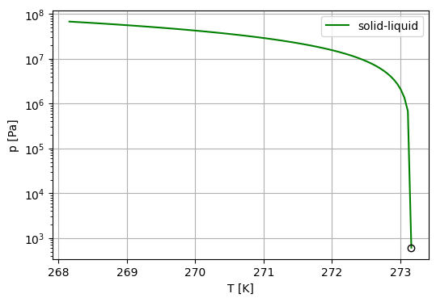
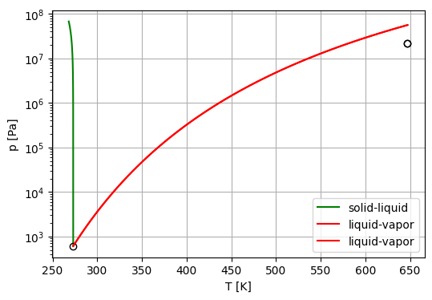
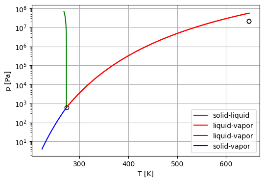
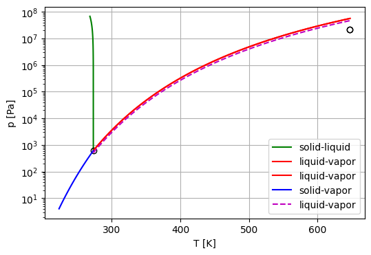

Phase diagram of a pure substance (single component system)#
Here, we practice using Python to make a T-P phase diagram of a pure substance.
We use water as the example, for which the triple point at $\(T_t=273.16~K\)\( \)\(P_t=611.73~Pa,\)\( boiling point at \)\(T_b = 99.61+273.15 =372.76~K\)\( \)\(P_b = 100~Pa,\)\( and critical point at \)\(T_c = 647.3 ~K\)\( \)\(P_c = 22.05~MPa.\)$
Thermodynamics#
Solid-liquid interface#
At equilibrium between solid and liquid phase, Gibb’s free energy: \(G^S = G^L\) such that \(dG^S = dG^L\), i.e., \(dG^S = dG^L \Longrightarrow -S^SdT + P^SdV = -S^LdT + P^LdV. \) $\(\bigg(\frac{dP}{dT}\bigg)_{eq} = \frac{S^S-S^L}{V^S-V^L} = \frac{\Delta S}{\Delta V}.\)\( At equilibrium, \)\Delta G = 0\(, such that \)\Delta H = T\Delta S\(, thus \)\(\bigg(\frac{dP}{dT}\bigg)_{eq} = \frac{\Delta H}{T \Delta V}.\)\( This is known as the Clapeyron equation, i.e., \)\(P(T)=P_0 + \frac{\Delta H_{melt}}{\Delta V_{melt}} \ln\frac{T}{T_0},\)\( where \)P_0\( and \)T_0$ are the pressure and temperature at a reference state.
Vapor-condensed phase#
\(\Delta V = V^{vap} - V^{con}\). Since the molar volume of vapor is much larger than that of a condensed phase, $\(\Delta V \approx V^{vap}.\)\( The Clapeyron equation becomes \)\(\bigg(\frac{dP}{dT}\bigg)_{eq} = \frac{\Delta H}{T V^{vap}}.\)\( Further assuming that the vapor behaves as an ideal gas (\)PV=RT\(), we have \)\(\bigg(\frac{dP}{dT}\bigg)_{eq} = \frac{P\Delta H}{RT^2}.\)\( \)\(\bigg(\frac{dP}{P}\bigg)_{eq} = \frac{dT}{T^2}\frac{\Delta H}{R}.\)\( or the Clausius–Clapeyron equation: \)\(d\ln P = \frac{\Delta H}{R} \frac{dT}{T}.\)\( If \)\Delta H\( is independent of \)T\(, we obtain \)\ln P = -\frac{\Delta H}{RT} + \text{constant}\( or \)\(\ln\frac{P}{P_b} = \frac{\Delta H}{R}\bigg(\frac{1}{T_b}-\frac{1}{T}\bigg).\)$
Data#
melting: solid to liquid
H_melt = 5.98 kJ/mol
S_melt = 22 J/(mol*K)
V_melt = -1.634 cc/mol
boiling: liquid to gas
H_boil = 44.9 kJ/mol
S_boil = 165.0 J/(mol*K)
V_boil = 22050.0 cc/mol
sublimation: solid to vapor
H_subl = 50.9 kJ/mol
S_subl = 186.0 J/(mol*K)
V_subl = 22048.0* cc/mol
Solid-liquid phase boundary#
Use the thermodynamic data given above to draw the equilibrium phase boundaries between solid and liquid phases.
use triple point as the reference state
# import libraies
import numpy as np
import matplotlib.pyplot as plt
%config InlineBackend.close_figures = False
# use triple point as the reference state
T_t = 273.16
P_t = 611.73
# melting
H_melt = 5.98*1e3
V_melt = -1.634*1e-6
T_melt = np.linspace(T_t-5, T_t,100)
P_melt = P_t + (H_melt/V_melt) * np.log(T_melt/T_t)
# fig = plt.figure(figsize=(6,4))
fig, ax = plt.subplots(figsize=(6,4))
ax.semilogy(T_melt,P_melt,c="g",label="solid-liquid")
ax.plot(T_t,P_t,'ko',markerfacecolor='none')
ax.set_xlabel('T [K]')
ax.set_ylabel('p [Pa]')
ax.grid(True)
ax.legend()
<matplotlib.legend.Legend at 0x19ec4ce30>

liquid-vapor phase boundary#
From Clausius–Clapeyron equation, $\(P= P_0 \exp\bigg[\frac{\Delta H}{R} \bigg(\frac{1}{T_0} -\frac{1}{T}\bigg) \bigg]\)$
Note that the distinction between liquid and vapor phases are up to the critical point.
# boiloing
H_boil = 44.9*1e3
V_boil = 22050.0*1e-6
# gas constant
R = 8.314 #J/(mol*K) # gas constant
# critcal point
T_c = 647.3
P_c = 22.05*1e6
# temperature grid
T_boil = np.linspace(T_t, T_c, 100)
P_boil = P_t*np.exp((H_boil/R)*(1/T_t - 1/T_boil))
ax.semilogy(T_boil, P_boil, c="r", label="liquid-vapor")
ax.semilogy(T_c, P_c,'ko',markerfacecolor='none')
ax.legend()
plt.show()

solid-vapor phase boundary#
Similar to the liquid-vapor boundary, we use Clausius–Clapeyron equation again.
# sublimation
H_subl = 50.9*1e3
V_subl = 22048.0*1e-6
# gas constant
R = 8.314 #J/(mol*K) # gas constant
# temperature grid
T_subl = np.linspace(T_t-50,T_t,100)
P_subl = P_t*np.exp((H_subl/R)*(1/T_t - 1/T_subl))
plt.semilogy(T_subl,P_subl,c="b",label="solid-vapor")
ax.legend()
plt.show()

Try a difference reference state#
Let’s draw another liquid-vapor phase boundary using boiling point as the reference state.
# boiling point
T_b = 372.76
P_b = 100*1e3
# temperature grid
T_boil_2 = np.linspace(T_t, T_c, 100)
P_boil_2 = P_b*np.exp((H_boil/R)*(1/T_b - 1/T_boil_2))
ax.semilogy(T_boil_2, P_boil_2, "--", c="m", label="liquid-vapor")
ax.legend()
plt.show()
